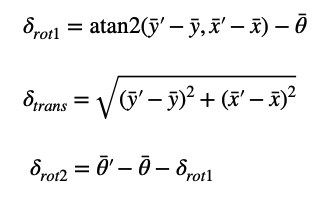

Lab 10: Localization - Simulation
Bayes Filter
In this lab, we implement a Bayes Filter on a virtual robot to estimate its position within a simulated 2D environment. Based on the initial state, control inputs, and sensor measurements, a Bayes filter estimates the robot's position, aka belief. At each time step, the prediction step uses a motion model (odometry model for this lab) to estimate the robot's new state, which increases uncertainty. The update step then incorporates sensor measurements (sensor model for this lab) to refine the belief, reducing uncertainty.
compute_control
compute_control() calculates three motion components:
the initial rotation needed to align with the movement direction (delta_rot_1),
the translation distance traveled (delta_trans), and the final rotation required to reach the current orientation (delta_rot_2).
Below is a screenshot of calculation equation the taken from Lecture 18: Motion Models.
I added another helper function normalize() to keep the angles in range, not realizing we were already given the function normalize_angle in the Mapper class.
odom_motion_model
odom_motion_model() computes the probability of a roboot being in the orientation calculated using compute_control().
All parameters are calculated as Gaussian distributions with a known standard deviation loc.odom_rot_sigma.
prediction_step
prediction_step() iterates over the entire grid and calculate the belief at that position and orientation from the odometery model parameters using cur_odom and prev_odom.
As recommened in the manual, I made it so that states with probabilities less than 0.0001, an extremely small possibility, were skipped to speed up the process. There are 1944 possible states from the 12 x positions, 9 y positions, and 18 yaw positions meaning going through all previous and current states would take 3,779,136 iterations which is computationally very expensive. This also meant I had to normalize the final value before returning, since the probabilitis wouldn't sum up to 1.
sensor_model
sensor_model() calculates the probability of observations in the obs[] array occuring, again as a Gaussian distribution with a known standard deviation loc.sensor_sigma.
update_step
update_step() iterates over the grid for every possible state, gets new sensor measurements from sensor_model() and updates the belief.
Simulation
The red lines represent odometry data, the green lines indicate the ground truth, and the blue line shows the Bayes Filter's predicted position. Despite significant errors in the odometry data, the Bayes Filter produces predictions that closely track the true position.
Below shows the comparison of the most probable state after each iteration of the filter with the ground truth pose.
I observed that the predictions are most accurate near walls compared to open spaces. This is expected, as sensor readings tend to be more reliable when the robot is close to large obstacles, resulting in more consistent distance measurements.